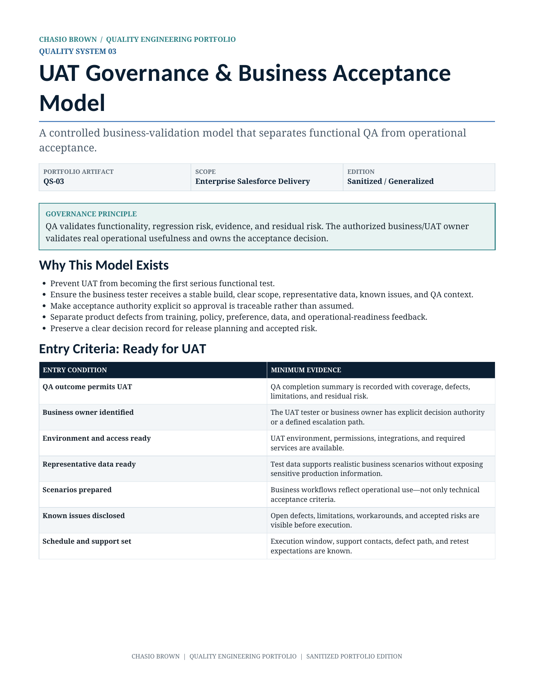

UAT Governance & Business Acceptance Model
A controlled business-validation model separating functional QA from operational acceptance and making decision authority explicit.

What this demonstrates
- Defined UAT entry criteria so business validation starts with a stable, understood build.
- A formal QA-to-UAT handoff with scope, evidence, known issues, access, data, and decision authority.
- Clear separation of QA outcome, business acceptance, risk authorization, and release decisioning.
- Consistent treatment of defects, requirement gaps, training issues, policy/process feedback, data issues, and deferred acceptance.
Entry and exit governance
The model defines what must be true before UAT starts and what evidence must exist before acceptance is complete.
Decision outcomes
Accepted, Conditionally Accepted, Rejected, and Deferred outcomes each have a defined meaning and next action.
Operational value
The process prevents UAT from becoming the first functional test and preserves a traceable business decision for release planning and accepted risk.
Built to make quality operational.
This is a generalized portfolio adaptation of an enterprise quality operating model. Institutional names, logos, personnel, internal URLs, ticket identifiers, environment names, proprietary fields, and implementation-specific details have been removed or generalized.